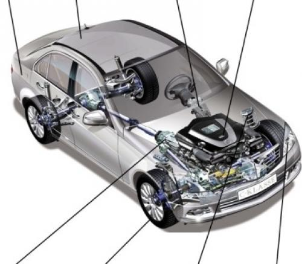

<div>
  <p>
    Устройство и ремонт автомобиля – строение автомобиля, устройство двигателя,
    трансмиссия автомобиля, система питания, система электрооборудования,
    ходовая часть, рулевое управление и тормозная система. Эти разделы помогут
    вам изучить устройство автомобиля, узнать как ремонтировать автомобиль
    самому, освоить приемы сварки автомобиля и пройти обучение токарному делу.
  </p>
  
</div>
